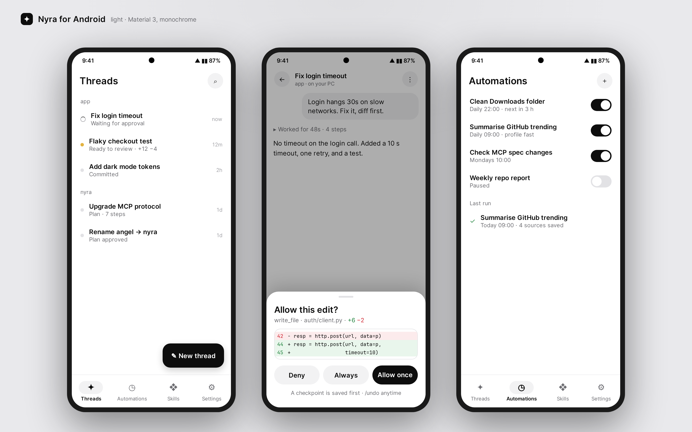

☰
先计划，后执行Plan, then act
--plan 只读生成 plan.md，你审完用 SHA-256 批准；改一个字节，旧批准就失效。--plan writes a read-only plan.md. You approve it by SHA-256, and any edit voids the approval.
v0.3.0 · MIT · 原名 Angelformerly Angel
Nyra 在你的电脑上读代码、改文件、跑命令、带证据查资料。每一次写入和执行都先经过你。纯 Python 标准库，零依赖。Nyra reads your code, edits files, runs commands and researches with sources, on your own machine. Every write and every command goes through you first. Pure Python standard library, zero dependencies.
$ git clone https://github.com/js2005happy/angel.git && cd angel
桌面与移动客户端为设计稿，正在开发中；现在可用的是命令行和本地网页界面。Desktop and mobile apps are designs in progress. Today Nyra runs as a CLI and a local web UI.
借鉴 Codex、OpenCode、Goose、OpenHands 的设计思想，代码全部原创。Ideas from Codex, OpenCode, Goose and OpenHands. Every line of code is original.
--plan 只读生成 plan.md，你审完用 SHA-256 批准；改一个字节，旧批准就失效。--plan writes a read-only plan.md. You approve it by SHA-256, and any edit voids the approval.
写文件、跑命令默认逐项审批；编辑前自动存检查点，/undo、/rewind 随时回退。Every write and shell command needs your OK. Checkpoints are saved first, so /undo and /rewind always work.
网页搜索与抓取的原文存成证据，结论都能追到来源。Pages it searches and fetches are kept as evidence, so every claim traces back to a source.
标准 MCP 服务器即插即用，skills/ 目录随手扩展能力。Plug in any standard MCP server, and extend it with a skills/ folder.
内置调度器，按间隔或每天定时运行任务。A built-in scheduler runs tasks at intervals or daily times.
DeepSeek、Grok、OpenAI、通义、Kimi、智谱、Gemini、本地 Ollama 等 14 个预设，失败自动切备用。14 presets including DeepSeek, Grok, OpenAI, Qwen, Kimi, GLM, Gemini and local Ollama, with automatic fallback.
--sandbox e2b 让文件和 shell 在云端沙盒里运行，不碰本机。--sandbox e2b runs files and shell in a cloud sandbox, away from your machine.
/status 显示真实 Token 用量和上下文余量，/compact 压缩长会话。/status shows real token usage and context left; /compact shrinks long sessions.
一个房间里多个 bot 分工协作，每个 bot 的权限独立设置。Several bots share a room, each with its own permissions.
默认模式下，Nyra 不会在你不知情时改动任何东西。By default, Nyra never changes anything without you knowing.
用一句话说清要做什么，或者先让它出计划。Say what you want in a sentence, or ask for a plan first.
看它要读哪些文件、跑哪些命令，满意再批准。See which files it will touch and which commands it will run, then approve.
每次写文件或跑命令都弹出审批，可以只放行一次。Each write or command waits for you. Allow it once, always, or deny.
看 diff、看证据；不满意就 /undo 回到上一个检查点。Read the diff and the evidence. Not happy? /undo to the last checkpoint.
$ python3 -m angel --workdir . --plan "修复登录超时" plan.md 已生成 · SHA-256 9f3c…e21a $ python3 -m angel --execute-plan --approve-plan 9f3c…e21a ◇ read_file auth/client.py ? write_file auth/client.py +6 −2 允许执行吗？[y/N/a] y ✓ 已保存检查点 · /undo 可回退 ? shell pytest tests/test_auth.py -q 允许执行吗？[y/N/a] y ✓ 12 passed
终端示意Illustrative terminal session
桌面端负责干活，手机端负责审批：离开电脑也能放行一次写入、看一眼 diff。The desktop does the work, the phone approves it: allow a write or read a diff while you're away.



界面设计稿，图中数据为示例。Design mockups with sample data.
git clone https://github.com/js2005happy/angel.git && cd angel export DEEPSEEK_API_KEY=sk-... # 或任意已支持的 provideror any supported provider python3 -m angel # 交互模式interactive python3 -m angel ui # 本地网页界面local web UI